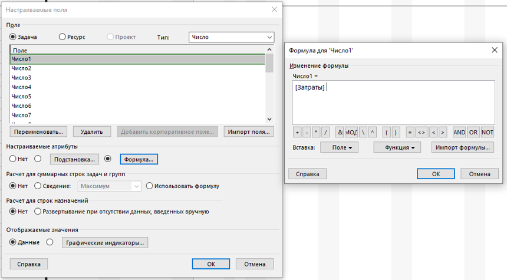
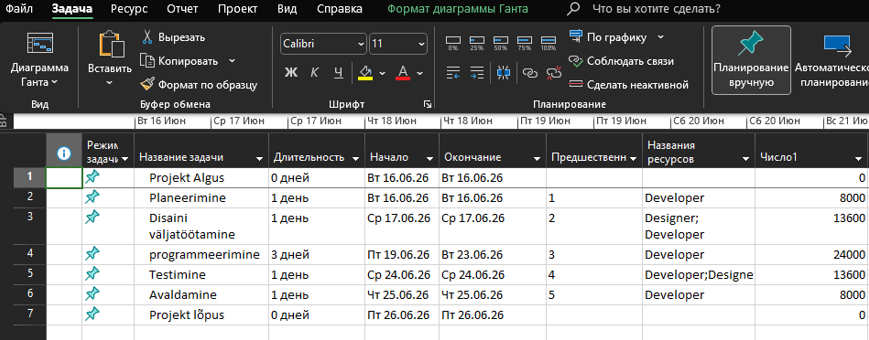

Arvutusvälja lisamine projekti (Custom Fields)
Arvutusväljad võimaldavad automatiseerida andmete töötlemist ja kuvada spetsiaalseid väärtusi, näiteks kulusid või spetsiifilisi arvutusi otse ülesannete tabelis.
1. Valemi seadistamine
Liigu vahekaardile Projekt -> Kohandatud väljad. Vali tüübiks Number (või muu vajalik andmetüüp), vali tabelist vaba väli (nt Number1) ja klõpsa nupule Valem.... Sisesta vajalik valem või vali see valmis väljade hulgast (nt Kulud).

2. Tulemuse kuvamine projekti tabelis
Kui valem on kinnitatud, saab uue veeru lisada otse Gantti diagrammi tabelisse. Nagu pildilt näha, arvutab MS Project väärtused (nt arendajate ja disainerite kulud) automaatselt iga sisestatud tegevuse (Planeerimine, Disaini väljatöötamine jne) kohta.
